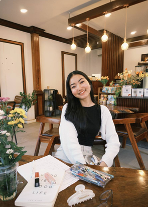
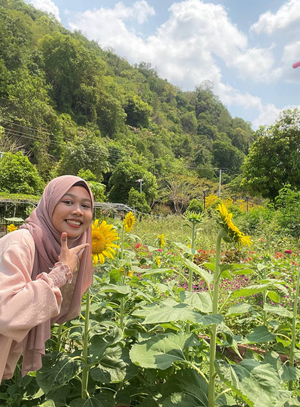

Two origin names. One shared purpose. A growing youth movement for education.
YBIC was inspired by the shared vision of Tang Naieam and Ya Rossita.

One of the origin people behind YBIC, helping build the idea of creating positive opportunities for children through education and volunteering.

One of the origin people behind YBIC, sharing the vision of youth participation, education and community impact.
A desire to help children learn and give young people a meaningful way to volunteer.
Teachers, photographers, editors and supporters joined together to create positive change.
YBIC began focusing its activities at Prohot Primary School and Preah Ponlea Primary School.
We hope to improve our activities and reach more children and communities in the future.